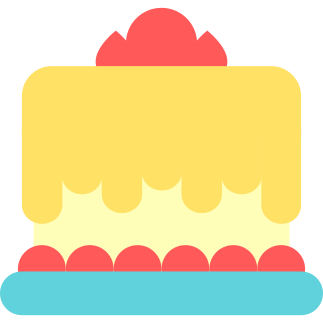

<mat-toolbar color="">
  <a routerLink="/" class="logo">
    <button
      mat-icon-button
      class="menu-icon"
      aria-label="menu icon-button with menu icon"
    >
      
    </button>
    <span class="loggo-font">The Cake Factory</span>
  </a>
  <span class="menu-spacer"></span>

  <a href="https://github.com/xadim">
    <button
      mat-icon-button
      class="menu-icon favorite-icon"
      aria-label="menu icon-button with heart icon"
    >
      <mat-icon>favorite</mat-icon>
    </button>
  </a>
  <a href="https://github.com/xadim/mars-robot-simulator.git">
    <button
      mat-icon-button
      class="menu-icon"
      aria-label="menu icon-button with share icon"
    >
      <mat-icon>share</mat-icon>
    </button>
  </a>
</mat-toolbar>
